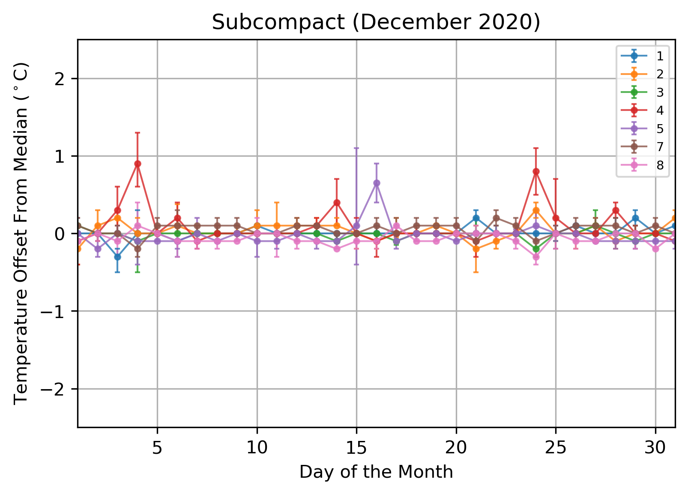
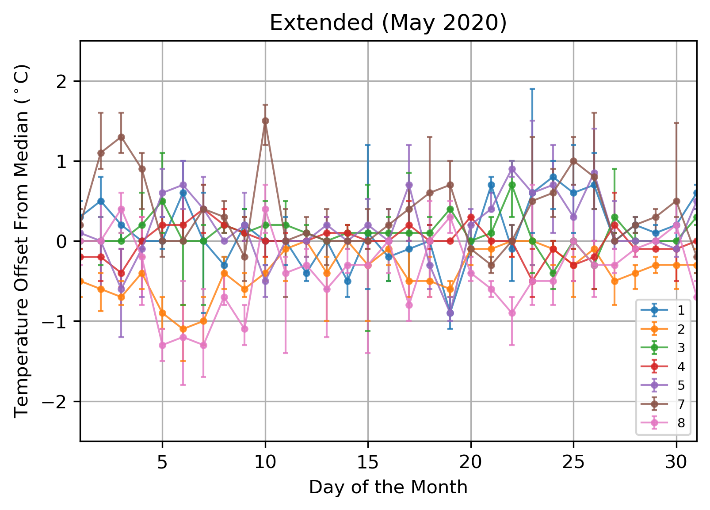
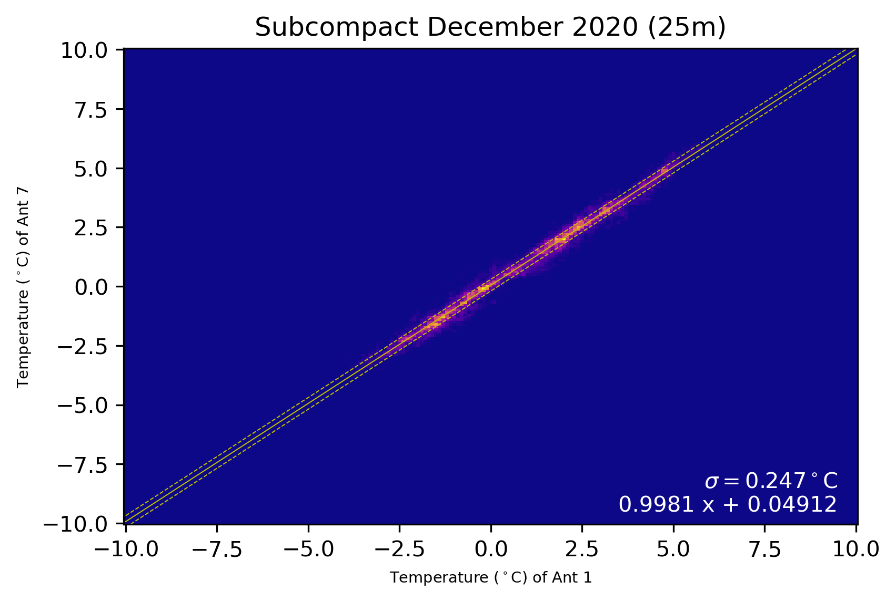
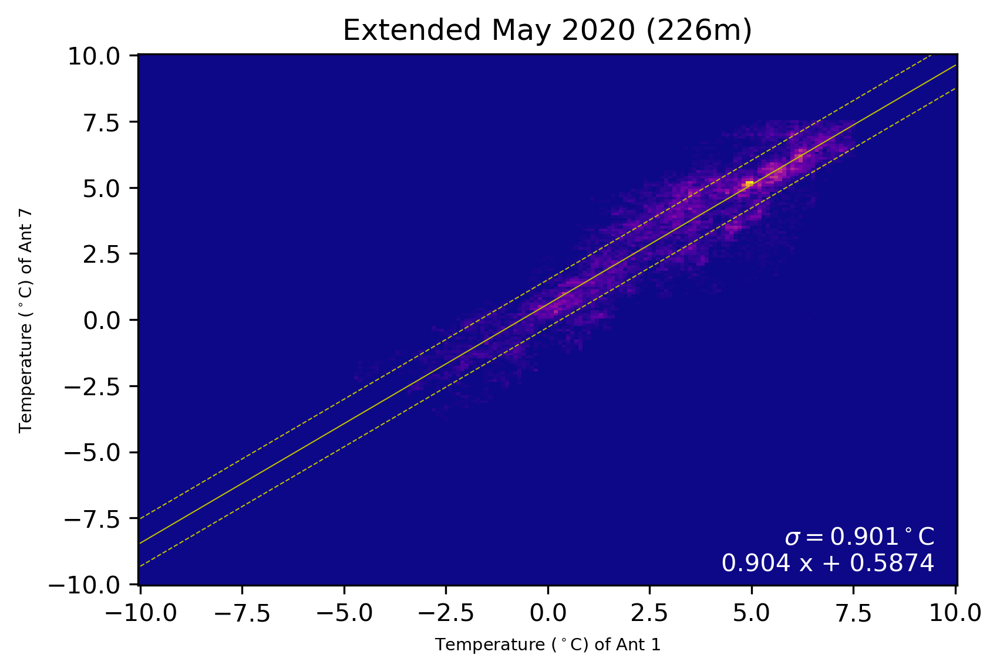
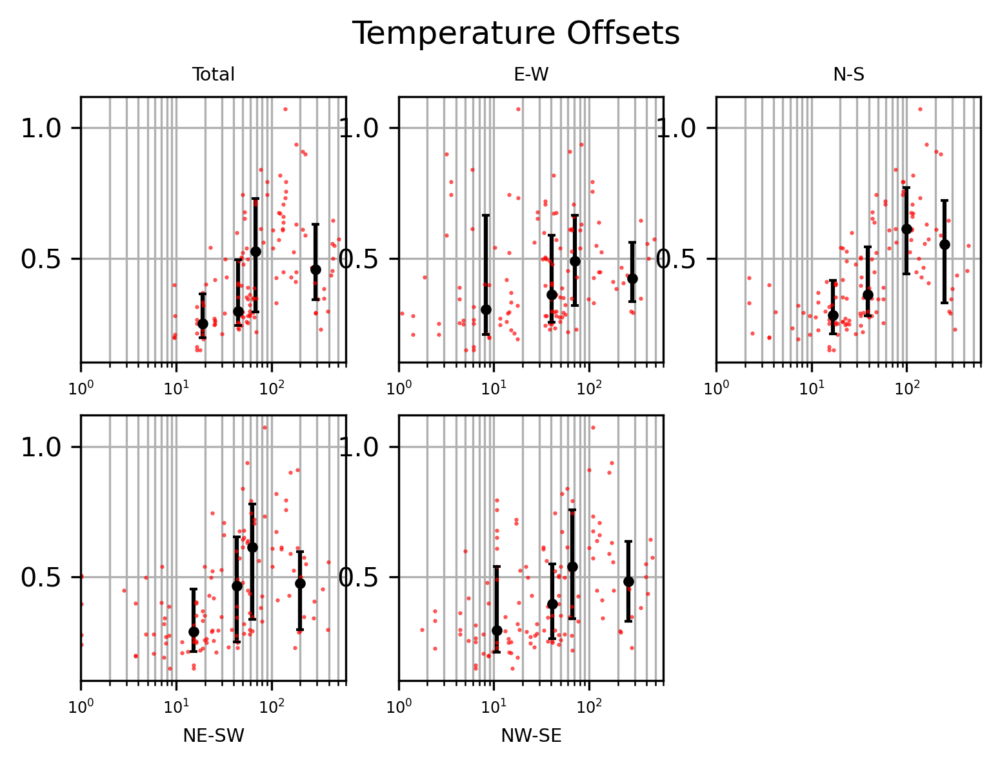

[some sort of intro/lead-in sentence] I dug into a bunch of the weather data from the various antenna stations. The goal was to answer questions from that last post about how reliable and consistent are the weather station measurements across the array and how much does the difference in weather across the array actually matter when it comes to refractivity and phase correction.
To start I pulled the temperature, pressure, and relative humidity data for various months in different configurations - starting with subcompact and eventually getting up to VEX. Using only the night time data (04-16 UT) I determined an array median for each parameter and then used that to calculate the offset of each of the antennas' values. I also flagged out antennas that were in the hangar or whose weather stations were not working right. Once I had the offsets for each antenna, I took the median value for each antenna on each day, shown in the plots below. I repeated this with several months in all 4 configurations and for each of the weather parameters.
 These plots show the temperature offsets and as expected there is almost no difference between antennas when in subcompact, but much more variation in extended when the baselines are longer. This trend held true for temperature and humidity across the various configurations - with humidity tending to be more noisy and also affected by the 100% saturation point with bad weather. The offsets in subcompact are pretty small, about a tenth of a degree, and fairly consistent. Even in extended the offsets don't get to be morethat 1.5-2 degreesC. Humidity is noisier but the offsets are still about a 3-5% difference in extended. The pressure offsets are essentially constant, varying only by .1 millibars over a month, maybe. The difference between the antennas is also pretty small, about .1-.2 mbar across antennas at the same altitude and 1-3 mbars for antennas on pads further out. In general it looks like the weather measurements are fairly stable and consistent with each other in the long term, even with some variation at longer baselines.
Once I could determine that the weather measurements were pretty stable over time, I could look at how different the actual weather was across the array. I directly compared the minute-to-minute measurements for different baselines in each configuraton for pressure, temperature, and relative humidity. Shown below are the comparisons of temperature for the longest baselines in the extended configuration, and the same antenna pair in subcompact for the months above.
 I calculated a line of best fit (solid yellow) and +/- 1 sigma for the distribution (dotted yellow). With this I got the 'width' (? variance?) to use as a measure of how different the weather values are across each baseline. I compiled these results for all the baselines in the configurations I had looked at (8 months total) and then compared them to baseline lentgh to see if ther was any correlation. I compared the variance(?) to total baseline length, as well as the distance projected on different cardinal directions.
These plots above show the variance(?) in humidity and temperature compared to the baseline length along various axes (in meters). I also binned the data according to approximate baseline ranges for each configuration (~30m, ~50m, ~150m,~500m) and found the median of the variance(?) within each of those ranges, the error bars are +/- 1 sigma. From these plots it is pretty clear to see that there is a general positive correlation between weather difference and distance between antennas. The humidity offsets have a stronger correlation than temperature, and a consistently upward trend. Interestingly for both, the clearest relationship is with distance in the North-South direciton. The temperature data is generally noisier, but it definitely seems to decrease at the longest baselines. This is unexpected, but also may be due to the fact that there is much less VEX range data than the other configurations - more data is definitely needed to see if that is the case.
So looking at those above plots, I took the median estimates and the upper error/worst-case scenario estimates and plugged them into the handy Section 1 equations from this memo to calculate the difference in refractivity, DeltaN, along a baseline. I did this for both 'Dry' (RH 15%) and 'Wet' (RH 85%) nights for temperature using the same criteria from Karto's last log. I then used that to estimate the path length difference between the two antennas, assuming that the 'ground' atmosphere went up ~100m (nice round numbers).
In the worst-case scenario, there would be a 4% difference in humidity or a 0.8 degC difference in temperature across a ~500m baseline. That humidity difference would result in a DeltaN of 1.224 and a path length difference of about 0.12mm; temperature would have a DeltaN of 0.8753 and path length difference 0.088mm on a wet night, and a much better difference of DeltaN = 0.2698, path length = .027mm on a dry night.
The path length difference doesn't significantly affect the phase (?) until it's about 10% of the wavelength - which for the SMA would be around .1mm. From the data analysis I've done so far, in general the weather differences between antennas is well below that threshold. The difference in refractivity and path length between antennas don't really come close to it until we look at the longest baselines and the worst weather. From that I think it is safe to assume that, with a few exceptions, the antenna-to-antenna difference in weather isn't significant enough to affect the phase stability.
Going a little further, we can compare the difference in refractivity between antennas to Karto's earlier results on the difference in refractivity over the course of the night [earlier log post, histograms most of the way down]. The results I got for antenna-to-antenna refractivity has DeltaN=0.2-1.2. Karto's results show that while most of the change in refractivity over a night (08-14 UT) is pretty small, there are still a lot of times where the DeltaN=5-20 -- which is /significantly/ bigger than ant-to-ant changes.
Ultimately, we don't need to worry about adjusting the refractivity N for between the antennas because the effect isn't that significant. Instead, the change in weather experienced by the array over the course of a night will have a much bigger affect on refractivity and phase stability.